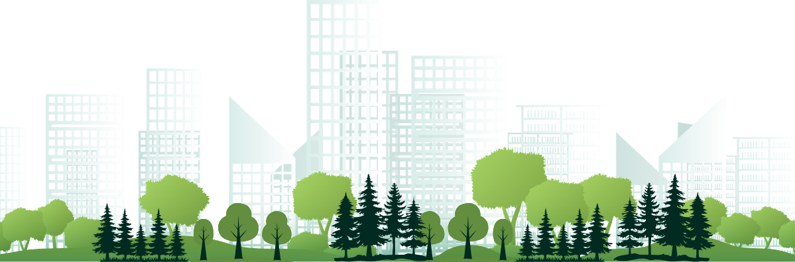

Bellevue
Washington's fifth-largest city, Bellevue is the Eastside's high-tech and retail center, known as "a city in a park."

Overview
Bellevue is Washington's fifth-largest city and the economic center of the Eastside. The area was originally home to Coast Salish peoples, including the Duwamish and Snoqualmie, before settlers arrived in the late 1800s. Named Bellevue, meaning "beautiful view" in French, the community grew from a small farming and logging settlement into a thriving city after the opening of the first Lake Washington floating bridge in 1940. Bellevue was officially incorporated in 1953 and has since become a diverse center for business, technology, and retail.
What Visitors Can Expect
Visitors will discover a city where modern skyscrapers stand alongside parks, wetlands, and wooded neighborhoods. Located between Lake Washington and Lake Sammamish, Bellevue offers outdoor recreation, shopping, arts, and cultural attractions within minutes of downtown. Popular destinations include Bellevue Square, Mercer Slough Nature Park, Meydenbauer Bay, and the BelRed Arts District, making Bellevue an ideal blend of urban living and natural beauty.
City Information
| Information | Value | |
|---|---|---|
 |
Population | 158,600 (2025 estimate) |
 |
Year Incorporated | 1953 |
 |
Region | Eastside, between Lake Washington and Lake Sammamish (Puget Sound region) |
 |
Classification | Urban |
 |
Income Level | Approximately $175,000 (higher than the Washington state median) |